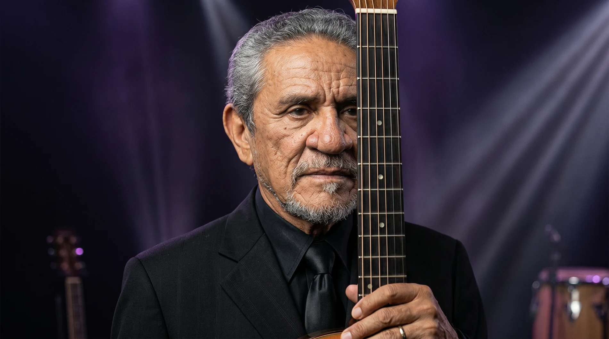
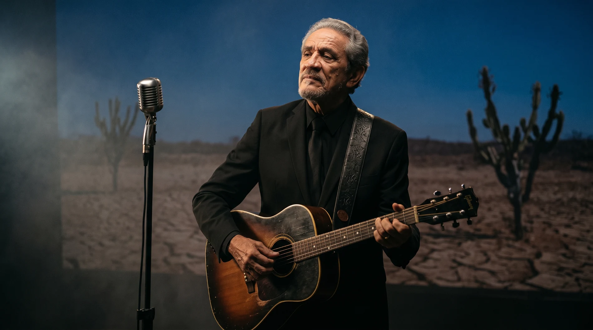

Trilogia • Fase I • O Retrato do Tempo
Zé Ramalho 50 anos
A maior celebração de sua carreira. Uma jornada nacional para uma obra que atravessou o Brasil, conectou gerações e se tornou parte da memória afetiva do país.
O marco
Existe apenas uma primeira vez.
Existe apenas um primeiro disco. Um primeiro grande sucesso. Um primeiro show. E existe apenas uma primeira celebração de 50 anos.
Em 2027, Zé Ramalho alcança um marco reservado a poucos artistas da história da música brasileira.
Uma oportunidade única. Irrepetível. Histórica.


Cinco décadas
Uma obra que atravessou o Brasil.
Ao longo de cinco décadas, Zé Ramalho construiu uma das trajetórias mais consistentes da música brasileira.
Sua obra ultrapassou estilos, atravessou regiões, conectou gerações e se transformou em parte da memória afetiva do país.
O momento é agora
Não existe outro aniversário de 50 anos.
Não existe outra oportunidade de reunir público, imprensa, parceiros e mercado em torno de um marco dessa dimensão.
Mais do que uma turnê. Uma oportunidade histórica.
Celebrar
Uma das maiores trajetórias da música brasileira.
Mobilizar
Milhões de pessoas que acompanharam essa história.
Registrar
Esse legado para as próximas gerações.
Dimensão
Um projeto com a dimensão de sua história.
Mais do que uma turnê, uma jornada nacional construída para percorrer o Brasil inteiro: mais de um ano de duração, todas as regiões do país, participações especiais, projetos de mídia e registro histórico.
Trilogia dos 50 anos
Uma história grande demais para caber em uma única turnê.
Por isso nasce a Trilogia dos 50 anos: três capítulos, uma única história.
A Jornada
O capítulo que dá início às comemorações. Uma homenagem às origens, à estrada, ao público e ao Brasil.
Os Encontros
A obra em diálogo com artistas, repertórios, vozes e momentos capazes de ampliar seu alcance.
A Permanência
O legado registrado, preservado e projetado para as próximas gerações.

Fase I • A Jornada
À estrada. Ao público. Ao Brasil.
A Jornada inicia as comemorações como uma homenagem às origens e a tudo aquilo que ajudou a transformar uma trajetória artística em patrimônio cultural.
É a fase mais abrangente da trilogia: a mais nacional, a mais popular, a mais próxima do público.
Os pilares da jornada
Três territórios explicam a força e a permanência de sua obra.
As origens
O sertão. A poesia. A espiritualidade. A imaginação. Referências que ajudaram a construir uma das vozes mais singulares da música brasileira.
A estrada
50 anos percorrendo o Brasil. Milhares de quilômetros. Centenas de cidades. Uma trajetória construída encontro após encontro, canção após canção.
O povo
Há muito tempo, essas músicas deixaram de pertencer apenas ao artista. Elas passaram a viver nas histórias de quem canta, guarda e transmite essa obra adiante.

O Brasil como palco
A maior turnê da carreira de Zé Ramalho.
A Jornada percorrerá todas as regiões do país, iniciando em São Paulo e encerrando no Rio de Janeiro. O roteiro está sujeito à disponibilidade de datas, locais e oportunidades estratégicas.
De fevereiro de 2027 a março de 2028, a proposta reúne capitais, mercados estratégicos e ações especiais em cidades emblemáticas.
A jornada pelo Brasil
20+cidades
60apresentações aproximadas
5regiões do país
1história conectando o país inteiro
Cidades previstas e mercados estratégicos
MacapáManausBelémSão LuísTeresinaFortalezaNatalJoão PessoaRecifeMaceióAracajuSalvadorCuiabáCampo GrandeGoiâniaBrasíliaBelo HorizonteVitóriaSão PauloRio de JaneiroCuritibaFlorianópolisPorto Alegre
O Brasil canta Zé Ramalho
Mais de um ano de estrada. Milhares de quilômetros percorridos. Milhões de pessoas impactadas.
Uma única história conectando o país inteiro.



Encontros históricos
Momentos únicos. Momentos memoráveis.
Ao longo de cinco décadas, a obra de Zé Ramalho construiu conexões com alguns dos maiores nomes da música brasileira.
A celebração dos 50 anos abre espaço para encontros históricos, capazes de ajudar a contar essa trajetória em diálogo com artistas, gerações e repertórios.
Sinônimos
Uma das canções mais importantes da música brasileira. Décadas atravessando gerações — e a possibilidade de transformar essa história em um momento histórico dentro da celebração dos 50 anos.
Participações especiais
Convidados especiais, em datas selecionadas, como homenagem à trajetória.
Elba Ramalho
Representando as raízes e a força da cultura nordestina. Participações em datas selecionadas.
João Ramalho
Presença ao longo da jornada, representando continuidade, legado e futuro. Mais do que convidado: o elo entre gerações.
Entre todas as participações possíveis, João Ramalho representa uma presença especialmente simbólica: a permanência de uma história construída ao longo de cinco décadas e o caráter familiar, afetivo e histórico desta celebração.
Um acontecimento nacional
A celebração dos 50 anos possui potencial para ultrapassar os palcos.
A proposta amplia a turnê para uma plataforma cultural: TV, imprensa, streaming, redes sociais, conteúdos especiais e patrocínios nacionais.
O objetivo é transformar a celebração em um dos grandes acontecimentos culturais do Brasil em 2027.
TV
Imprensa
Streaming
Redes sociais
Conteúdos especiais
Patrocínios nacionais
O Brasil será convidado
Do Fantástico para as estradas.
A celebração dos 50 anos merece começar da mesma forma que sua história foi construída: falando para o Brasil inteiro.
A proposta de lançamento nacional através do Fantástico apresenta oficialmente a celebração dos 50 anos, sua trajetória, seus marcos e o início da Jornada.
Não apenas o anúncio de uma turnê, mas o início de um acontecimento cultural.


Um legado para as próximas gerações
Mais do que uma turnê. Uma oportunidade de registrar definitivamente uma das trajetórias mais importantes da música brasileira.
- Registro audiovisual
- Documentário
- Memória
- Acervo histórico
- Depoimentos
- Conteúdos especiais
Por que esta celebração é diferente?
Porque ela reúne escala, narrativa e permanência.
- 50 anos de carreira.
- Projeto nacional.
- Trilogia inédita.
- Mais de um ano de duração.
- Participações especiais.
- Lançamento nacional.
- Registro histórico.
- Presença em todas as regiões do Brasil.
- A maior celebração da carreira de Zé Ramalho.
Este projeto não pretende transformar a obra de Zé Ramalho. Pretende celebrá-la, valorizá-la, ampliar seu alcance e construir uma comemoração compatível com a importância que essa trajetória possui para a música brasileira.

Vídeo
Filme manifesto da celebração.
Manifesto final
Existem artistas que fazem sucesso. Existem artistas que marcam gerações.
Existem artistas que entram para a história. E existem aqueles raros que se transformam em parte da identidade cultural de um país.
Durante cinquenta anos, Zé Ramalho fez exatamente isso. Agora chegou o momento de celebrar essa história.
Não com uma turnê. Mas com a maior homenagem já realizada à sua trajetória.

- Diretor Artístico
- Gian Zambon
- Direção Executiva
- Bruno Neves
- Diretor de Planejamento
- Adriano Pinheiro
- Diretor de Arte
- Bruno Magrini
- Vídeo, Motion & Web Designer
- Tawam Siqueira
O conteúdo desta apresentação é de autoria da SevenX e está protegido pelas Leis nº 9.610/98 e nº 9.279/96. É vedada sua reprodução, utilização ou divulgação sem autorização prévia. Todos os direitos reservados.